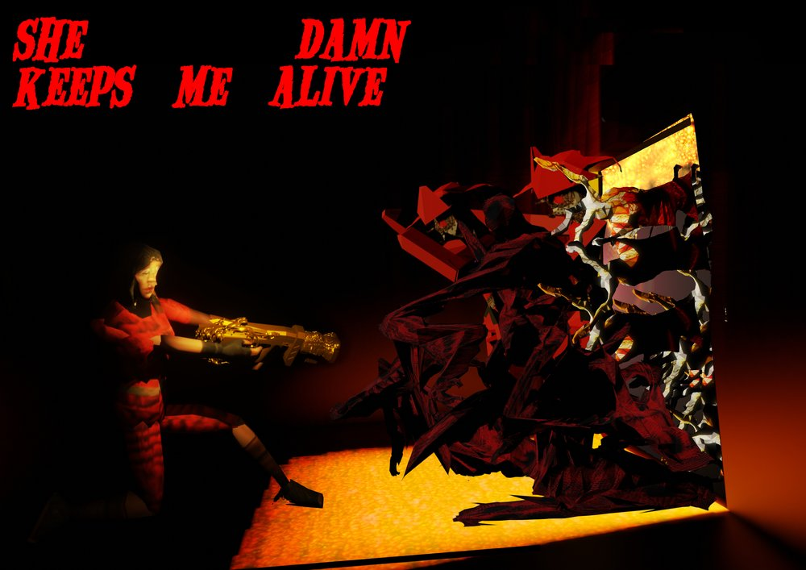
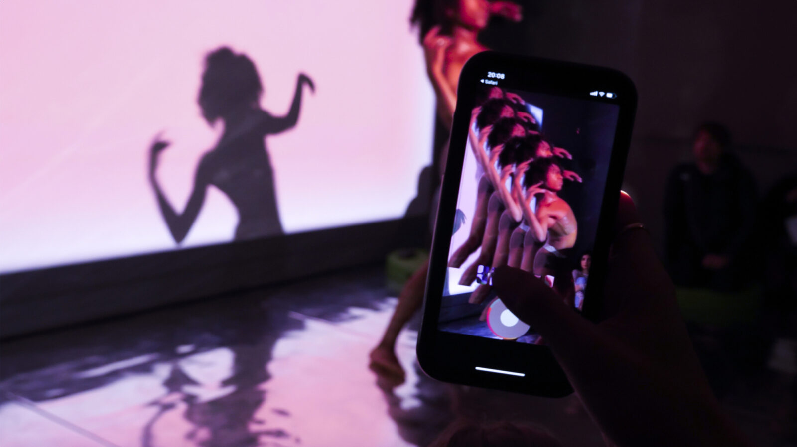

| Name | Image | Description |
|---|---|---|
| Following the Gourd | E3 in yellow."> | Digital archive of Black Trans lived experiences |
| The Bandidos | She keeps me damn alive, a 3D figure holding a gun points at an open door. From the door and covered by yellow light, red monsters pile up, chasing the gunner."> | Shooting game inspired by arcade House of The Dead, exploring themes around identity and gender. | Augmented Empathy |  | Online project that investigates the power of AR and Social Media to develop our empathy. |
| Thanks so much for reading! | ||